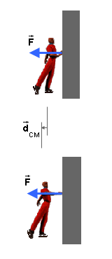

Contents
Page 1. CM-Work: General Remarks And Two Examples In One Dimension For A Constant Force.
Page 2. CM-Work: Definition In One, Two, And Three Dimensions For A Constant Force With An Example In Two Dimensions, And Definition For A Variable Force.
CM-Work Compared To Work
Textbooks usually do not distinguish between CM-work (read: center-of-mass work) and work and refer to both concepts as "work". This is unfortunate because it can lead to confusion. The work done by a force is defined as the force times the displacement of the point at which the force is acting while the CM-work done by a force is defined as the force times the displacement of the center of mass (CM) of the object or system on which the force is acting. (In both definitions, "times" denotes the scalar product.) The work and CM-work done by a given force during a given time interval are different in general because the displacements involved in the two kinds of work can be different.
Apart from the difference in the displacements in the defintions of work and CM-work, there is nothing to distinguish the two concepts.
The term "CM-work" is not a standard term, but is used in MAP as a reminder that CM-work is related to the displacement of the center of mass (CM). In the literature, the term "pseudowork" has also been used for CM-work.
CM-Work Done By A Constant Force: One Dimension
Example 1.
Figure 1
Figure 1 shows a rigid block that undergoes a displacement
without rotation of the block while a force  is acting on the block. In this
case, the displacement
is acting on the block. In this
case, the displacement  of the point at which the force is acting is
also the displacement of the CM of the block. Therefore the
CM-work done on the block by the force is equal to the work done
on the block and both are equal to
of the point at which the force is acting is
also the displacement of the CM of the block. Therefore the
CM-work done on the block by the force is equal to the work done
on the block and both are equal to
WCM = W = Fd.  (1)
(1)
Example 2. Figure 2 below shows a skater pushing off a
wall. The wall exerts a force on the skater where the wall is in contact with the
skater's hand.
Figure 2 shows the skater initially and at later instant and the
displacement CM of the CM of the skater between the
two instants.

Figure 2
The CM-work done by the wall on the skater is equal to
FdCM, which is clearly non-zero. In contrast,
the work done by the wall on the skater is zero because the
displacement of the point at which the force is acting, i.e., the displacement
of the skater's hand, is zero.
Since no work is being done on the skater, no energy is being transferred to the skater. The kinetic energy acquired by the skater while pushing off the wall comes from an internal transformation of chemical energy in the skater's muscles into kinetic energy. This examples illustrates that CM-work, unlike work, is not a tranfer of energy. CM-work is a formal construct that only "looks" like work.
CM-Work: Generalities
Like work, CM-work is a scalar quantity. The SI-unit of CM-work, like that of work, is the joule (J).
Example 2 illustrates that the CM-work done on a system by an external force is not a transfer of energy to the system. This is why CM-work is also called pseudowork. Nevertheless, the CM-work done on a system by the net external force acting on the system is equal to the change in the system's translational kinetic energy. This kinetic energy is equal to M/2 V2, where M is the mass of the system and V the speed of the CM of the system. For details see Energy/CM-Work Theorem.